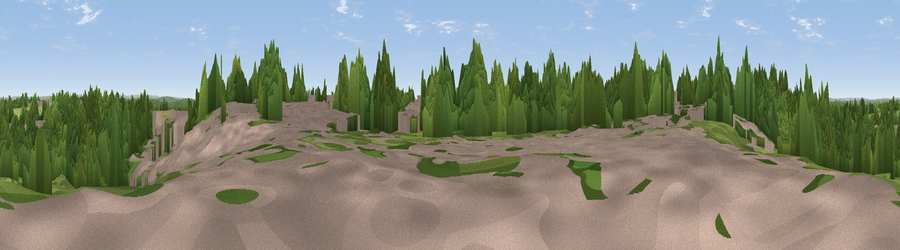

Beacon Hill
#35045 in England · top 60% of its area beats it · near Park GateWhere it is
The exact computed spot (SU 51333 08536). Click the marker for map links.
The view, rendered

A 360° render of this exact spot computed from the terrain model, tree cover and land cover — summer colours, afternoon light, calibrated against photographs of famous viewpoints. Real trees, hedges and buildings will differ in detail.
The panorama
Grey silhouette: terrain skyline in each direction (720 bearings, Earth curvature and refraction included). Dashed green: skyline with trees (+15 m) and buildings (+8 m) as obstacles. Blue strip: how far the ground is visible on each bearing.
Where the view opens
Wedge length = distance to the farthest visible ground on that bearing (vegetation-aware). Rings at 10, 25 and 50 km.
What fills the view
58% woodland · 22% built-up · 16% grassland · 2% cropland · 2% water
Angular shares of the visible panorama (visual magnitude), not map area. Landscape diversity 0.48 (0–1 Shannon).
Key numbers
More beautiful places nearby
The staircase of upgrades: each row has a higher view potential than everything closer. Driving times are estimates from straight-line distance, calibrated against real road routing — check an actual route before setting out.
| Place | Direction | Drive | Score |
|---|---|---|---|
| Viewpoint near Lower Swanwick | NW · 3 km | ~8 min | 42.4 |
| Viewpoint near Knowle | E · 4 km | ~8 min | 44.9 |
| Crockerhill | ENE · 7 km | ~14 min | 49.8 |
| Stephen's Castle Down | NNE · 12 km | ~23 min | 52.0 |
| Viewpoint near Southwick | E · 13 km | ~23 min | 74.3 |
| Viewpoint near Southwick | E · 13 km | ~24 min | 76.6 |
| Arreton Down | S · 22 km | ~36 min | 77.7 |
| Viewpoint near Alverstone | SSE · 23 km | ~38 min | 79.1 |
50.87405, -1.27181 · source: dobih hill · position refined by local search. Computed location — check access rights before visiting.